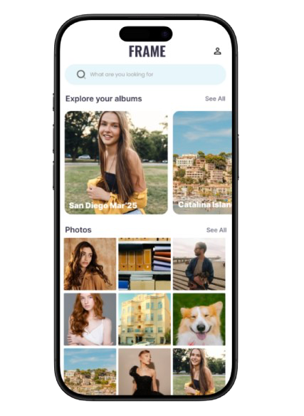

FRAME
Sharing Memories, Made Simple.
Frame intelligently groups your event photos and shares them with the right people - instantly. No more manual sorting, no more scattered albums, no more missed moments.


